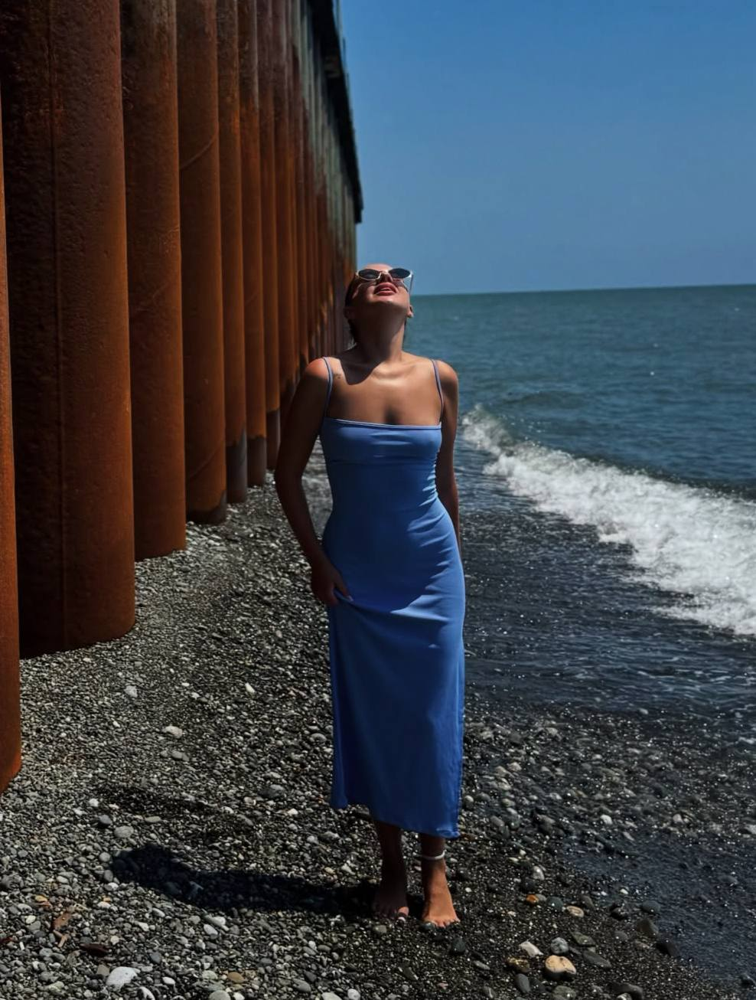
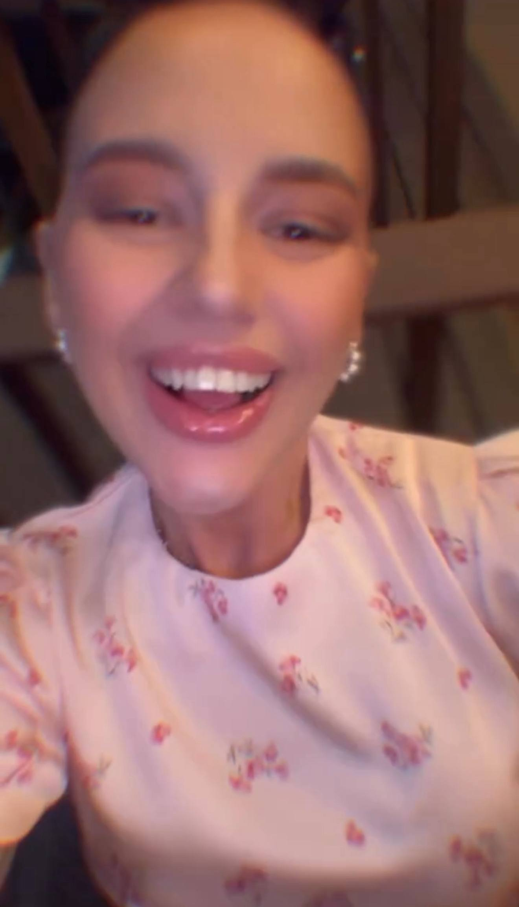
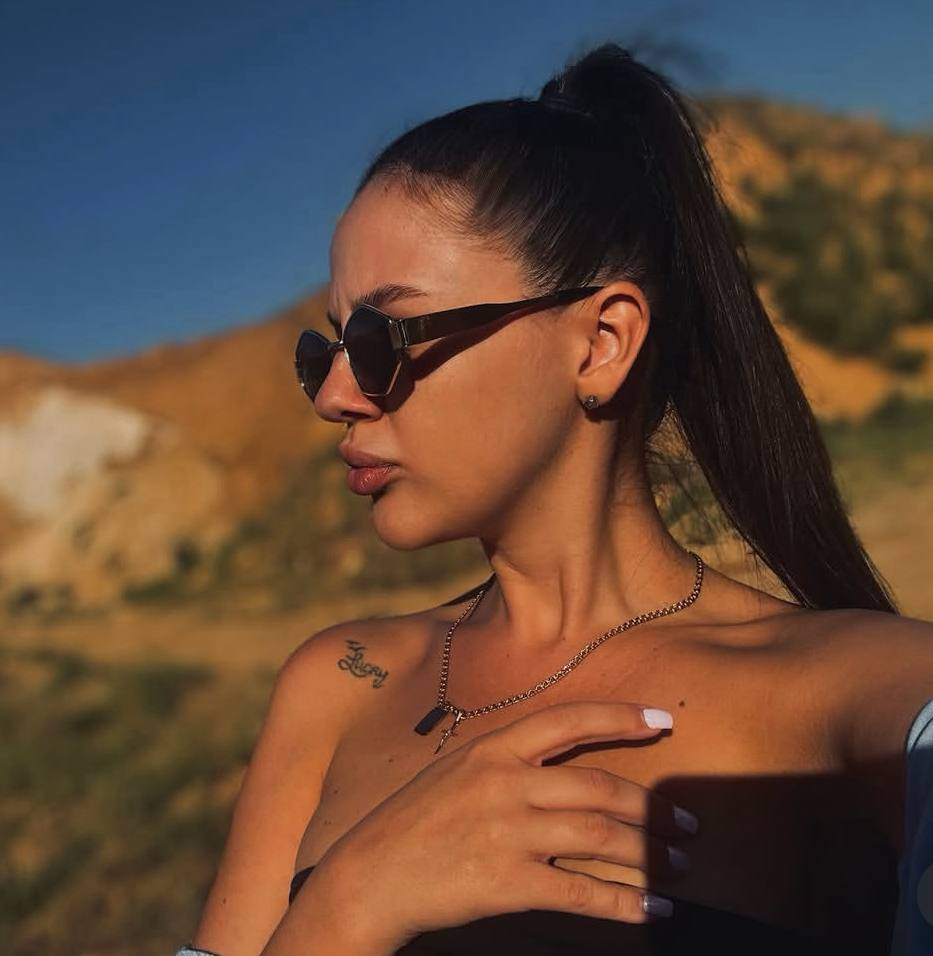
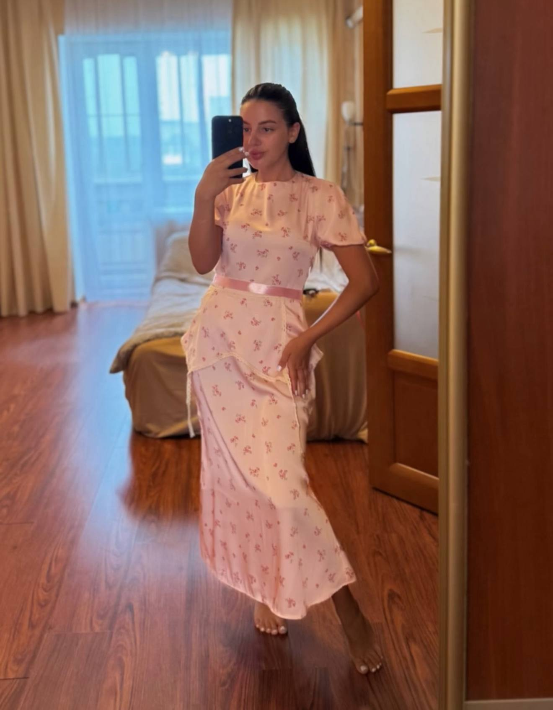
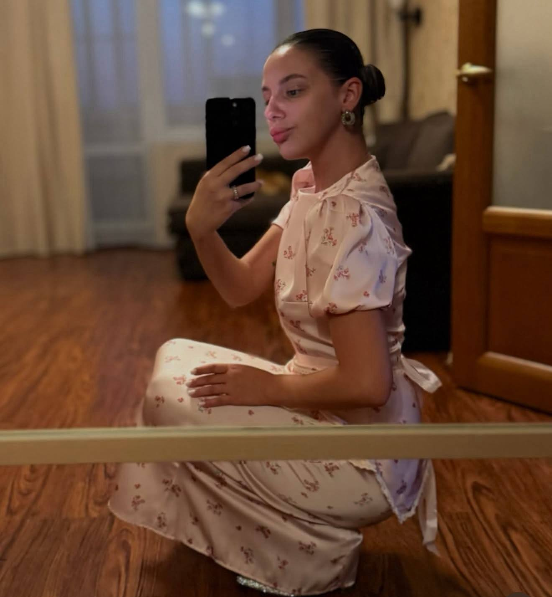
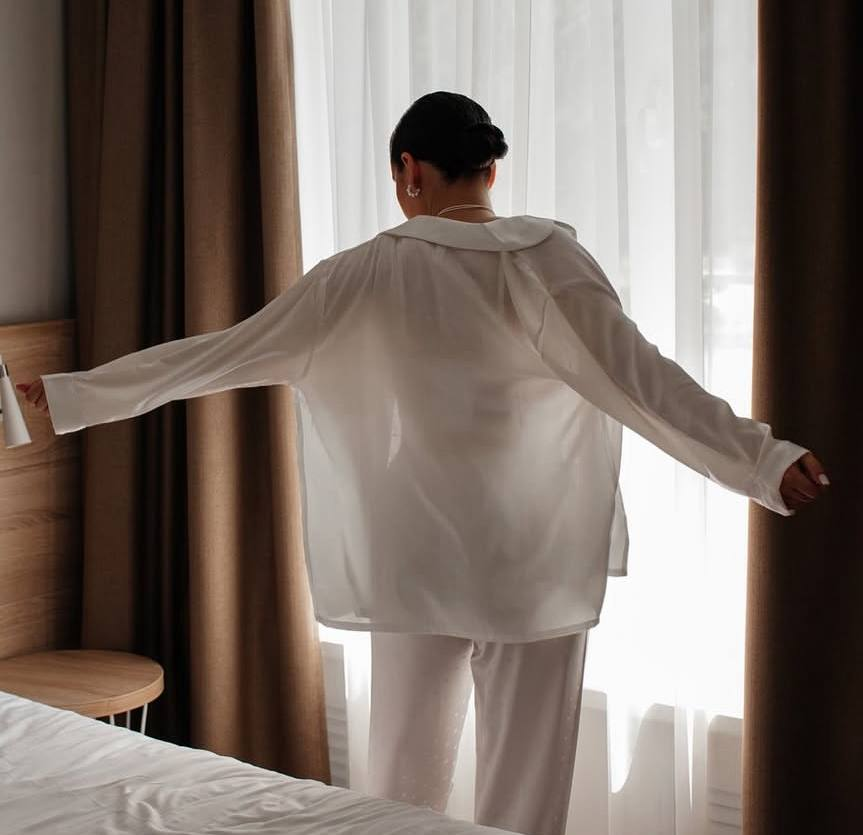
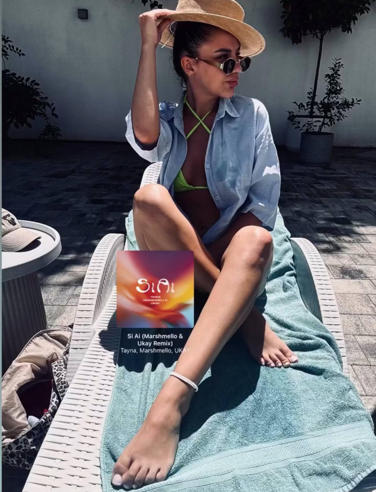
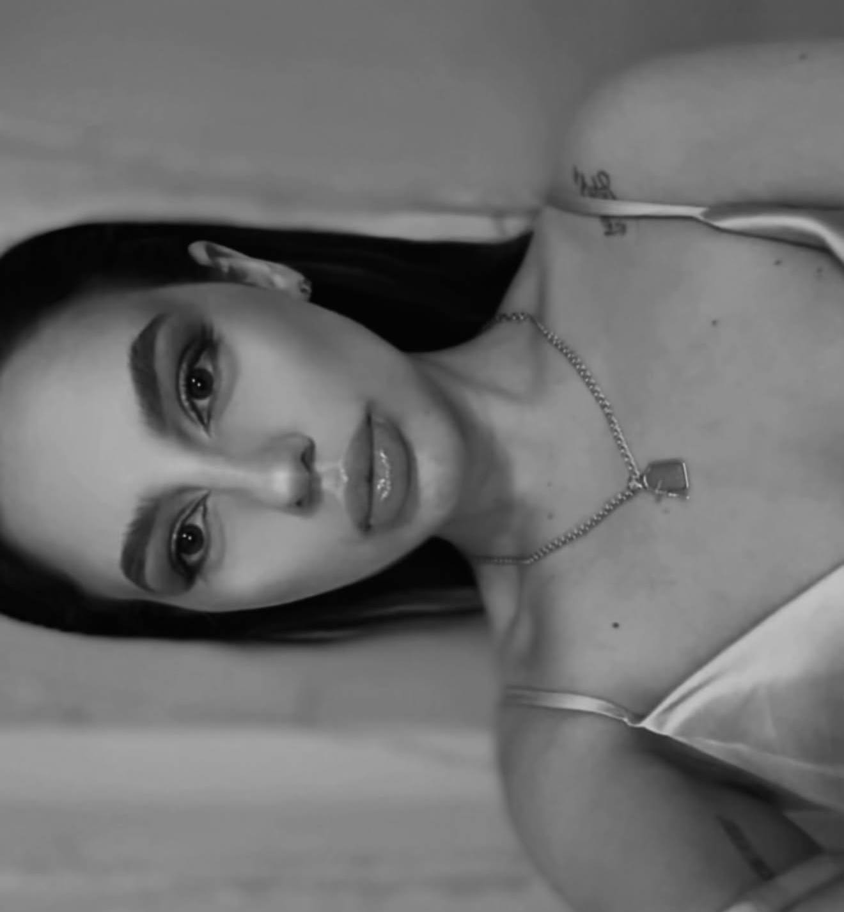

Творог
и сгущёнка.
Завтрак, которому не нужна замена.
Тут, как я понял, без вариантов.
НОВОЧЕРКАССК. МЫ СНОВА ЗДЕСЬ.
Даже спустя восемь лет.
Даже если кто-то едет чуть дольше обещанного.
под TONI — «Забываю прошлое»


Восемь лет назад мы немного пообщались.
Потом ты пропала с радаров. Бывает :)
А тут — твой просмотр истории. Пара сообщений.
И мы уже договариваемся о встрече в Новочеке.
Иногда одного маленького «привет» достаточно.
«Я уже начинаю нервироваться»ты, пока я всё ещё ехал
Да, со временем я слегка промахнулся.
Зато с решением приехать — точно нет.
Пообщались. Покатались.
И как-то совсем не хотелось,
чтобы этот вечер заканчивался.



03 — У ПОГОДЫ БЫЛИ СВОИ ПЛАНЫ
Пару раз проверили. Работает безотказно.
Но поездку с открытой крышей мы явно недополучили.
кажется, это повод для ещё одной встречи
Завтрак, которому не нужна замена.
Тут, как я понял, без вариантов.
Тот самый десерт после ужина.
Взял на заметку.



Спасибо тебе за этот вечер.
А поездку с открытой крышей
нам ещё надо повторить.